Recursos
Ferramentas disponíveis na versão 0.2.0, aba por aba, na mesma ordem da faixa de opções. Itens em desenvolvimento estão indicados.
“testado” = efeito conferido em teste automatizado que clica no botão da faixa (35 funções). As demais estão na faixa e ligadas a comandos do motor; o efeito delas ainda não tem teste automatizado próprio.
Arquivo
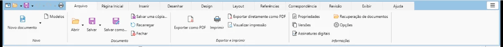
- Novo documento
- Modelos
- Abrir
- Recentes (seta do botão Abrir)
- Salvar testado
- Salvar como
- Salvar uma cópia
- Recarregar
- Fechar
- Exportar PDF
- Exportar PDF direto
- Imprimir
- Visualizar impressão
- Propriedades
- Versões
- Assinatura digital
- Recuperação de documentos testado
- Configurações
Página Inicial
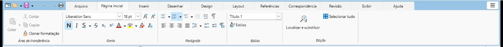
- Colar
- Recortar
- Copiar
- Pincel de formatação
- Colar especial (seta do botão Colar)
- Fonte
- Tamanho
- Aumentar fonte testado
- Diminuir fonte testado
- Negrito testado
- Itálico testado
- Sublinhado testado
- Tachado testado
- Subscrito testado
- Sobrescrito testado
- Cor da fonte
- Realce
- Limpar formatação testado
- Caractere (diálogo)
- Marcadores testado
- Numeração testado
- Lista multinível
- Diminuir recuo testado
- Aumentar recuo testado
- Marcas de formatação testado
- Alinhar à esquerda testado
- Centralizar testado
- Alinhar à direita testado
- Justificar testado
- Espaçamento entre linhas
- Aumentar espaço entre parágrafos
- Diminuir espaço entre parágrafos
- Parágrafo (diálogo)
- Estilo do parágrafo
- Painel de estilos
- Localizar e substituir
- Selecionar tudo
Inserir
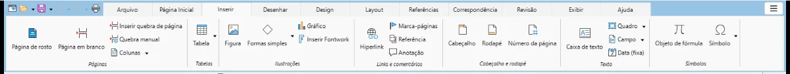
- Capa
- Página em branco testado
- Quebra de página testado
- Quebras (página, coluna, linha)
- Seção
- Tabela
- Imagem
- Formas
- Gráfico
- Fontwork (texto artístico)
- Link
- Indicador
- Referência cruzada
- Comentário testado
- Cabeçalho
- Rodapé
- Número de página
- Caixa de texto
- Quadro
- Campos
- Data
- Equação
- Símbolo
Desenhar
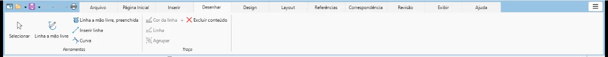
- Selecionar traços
- Caneta (linha à mão livre)
- Forma livre preenchida
- Linha
- Curva
- Cor do traço
- Espessura e estilo
- Agrupar
- Excluir traço
Em desenvolvimento: Marca-texto, Borracha, Sensibilidade à pressão da caneta.
Design
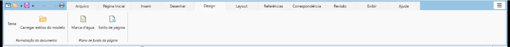
- Temas, cores e fontes do documento
- Conjuntos de estilos
- Marca-d'água
- Cor e bordas da página
- Bordas de página (botão Cor e bordas da página)
Layout
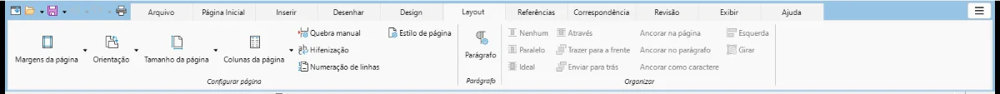
- Margens
- Orientação
- Tamanho do papel
- Colunas
- Quebras de página e seção
- Hifenização
- Numeração de linhas
- Estilo de página (diálogo)
- Recuos e espaçamento
- Sem quebra automática
- Quebra automática
- Quebra ideal
- Atrás/na frente do texto
- Trazer para frente
- Enviar para trás
- Ancorar à página
- Ancorar ao parágrafo
- Ancorar como caractere
- Alinhar objetos
- Girar
Referências
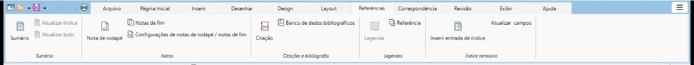
- Sumário e índices
- Atualizar sumário
- Atualizar todos os índices
- Nota de rodapé testado
- Nota de fim testado
- Configurar notas
- Inserir citação
- Banco de dados bibliográfico
- Bibliografia (botão Sumário e índices, tipo Bibliografia)
- Inserir legenda
- Lista de figuras (botão Sumário e índices, tipo Índice de ilustrações)
- Referência cruzada
- Marcar entrada
- Inserir índice remissivo (botão Sumário e índices, tipo Índice alfabético)
- Atualizar campos
Correspondência
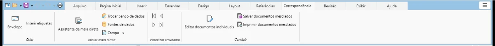
- Envelopes
- Etiquetas
- Assistente de mala direta
- Selecionar destinatários
- Exibir fonte de dados
- Inserir campo de mesclagem
- Primeiro registro
- Registro anterior
- Próximo registro
- Último registro
- Gerar documentos
- Salvar documentos mesclados
- Imprimir documentos mesclados
- Enviar por e-mail (fora da faixa por decisão de privacidade)
Revisão
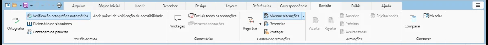
- Ortografia e gramática
- Revisão automática
- Sinônimos
- Contagem de palavras
- Idioma do texto (clique no idioma, na barra de status)
- Verificar acessibilidade
- Novo comentário
- Excluir todos os comentários
- Mostrar comentários
- Controlar alterações testado
- Mostrar alterações
- Gerenciar alterações
- Proteger controle de alterações
- Aceitar
- Rejeitar
- Alteração anterior
- Próxima alteração
- Aceitar todas
- Rejeitar todas
- Comparar documentos
- Combinar documentos
Em desenvolvimento: Revisão gramatical offline avançada.
Exibir
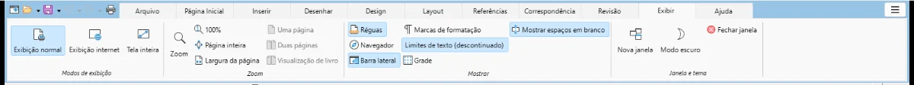
- Layout de impressão
- Layout da web
- Tela inteira
- Zoom
- 100% testado
- Página inteira testado
- Largura da página testado
- Uma página
- Várias páginas
- Exibição de livro
- Régua testado
- Painel de navegação
- Barra lateral
- Marcas de formatação
- Limites do texto
- Grade
- Ocultar espaço em branco
- Nova janela
- Fechar janela
- Alternar entre janelas (menu ≡ > Janela)
- Tema claro/escuro
Em desenvolvimento: Modo de leitura.
Ajuda
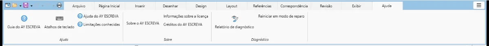
- Guia de utilização do AY testado
- Atalhos de teclado testado
- Ajuda do motor (offline)
- Limitações conhecidas testado
- Sobre o AY ESCREVA
- Licenças
- Créditos
- Relatório de diagnóstico testado
- Reiniciar em modo de segurança
Em desenvolvimento: Verificar atualizações (opcional).
Tabela (aba contextual)
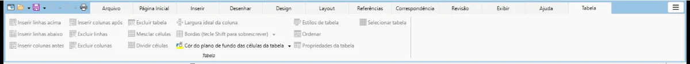
- Inserir linha acima
- Inserir linha abaixo testado
- Inserir coluna à esquerda
- Inserir coluna à direita
- Excluir linhas
- Excluir colunas
- Excluir tabela
- Mesclar células
- Dividir células
- Ajustar largura das colunas
- Bordas
- Sombreamento
- Estilos de tabela
- Classificar
- Propriedades da tabela
- Selecionar tabela
Imagem (aba contextual)
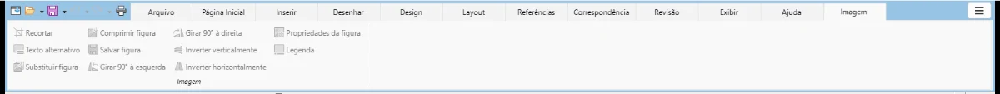
- Recortar
- Texto alternativo
- Trocar imagem
- Compactar imagem
- Salvar imagem
- Girar à esquerda
- Girar à direita
- Espelhar vertical
- Espelhar horizontal
- Propriedades da imagem
- Legenda
Forma (aba contextual)
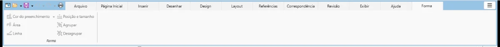
- Preenchimento
- Área
- Linha
- Posição e tamanho
- Agrupar
- Desagrupar
Visualizar impressão (aba contextual)
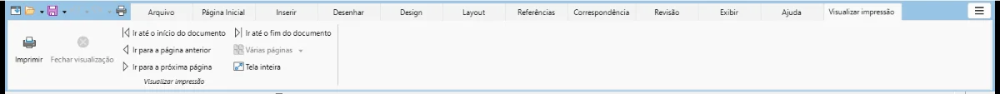
- Imprimir
- Fechar visualização
- Primeira página
- Página anterior
- Próxima página
- Última página
- Várias páginas na prévia
- Tela inteira